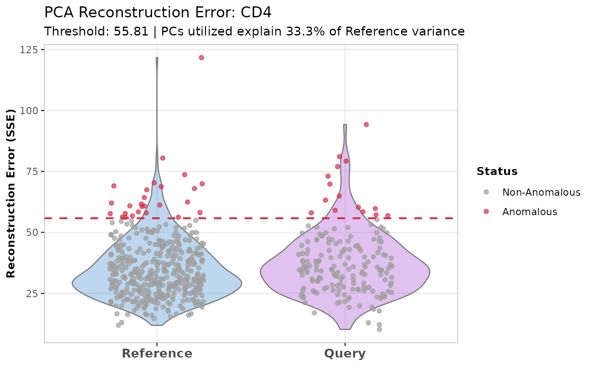

Calculate PCA Reconstruction Errors for Out-of-Distribution Anomaly Detection
Source:R/calculateReconstructionError.R, R/plot.calculateReconstructionErrorObject.R
calculateReconstructionError.RdThis function detects "out-of-distribution" anomalies by calculating the PCA reconstruction error (Sum of Squared Errors) for each cell. It projects cells into a reference PCA space, attempts to reconstruct their original gene expression profile based solely on reference PCA rules, and measures the residual difference.
This S3 plot method generates visualizations for PCA reconstruction errors (out-of-distribution anomalies). It displays the distribution of errors for the query and/or reference datasets, highlights the calculated anomaly threshold, and explicitly identifies anomalous cells. It can also generate heatmaps of the highly variable genes driving the local PCA space.
Usage
calculateReconstructionError(
reference_data,
query_data = NULL,
ref_cell_type_col,
query_cell_type_col = NULL,
cell_types = NULL,
pc_subset = 1:5,
n_hvgs = 100,
mad_multiplier = 2,
assay_name = "logcounts",
max_cells_query = 5000,
max_cells_ref = 5000
)
# S3 method for class 'calculateReconstructionErrorObject'
plot(
x,
cell_type = NULL,
data_type = c("both", "query", "reference"),
plot_type = c("violin", "boxplot", "ridge", "heatmap"),
draw_plot = FALSE,
...
)Arguments
- reference_data
A
SingleCellExperimentobject containing numeric expression matrix for the reference cells.- query_data
An optional
SingleCellExperimentobject containing numeric expression matrix for the query cells. If NULL, the reconstruction errors are computed for the reference data alone. Default is NULL.- ref_cell_type_col
A character string specifying the column name in the reference dataset containing cell type annotations.
- query_cell_type_col
A character string specifying the column name in the query dataset containing cell type annotations.
- cell_types
A character vector specifying the cell types to analyze. If NULL, all cell types are included.
- pc_subset
A numeric vector specifying which principal components to use in the reconstruction. Default is 1:5.
- n_hvgs
An integer specifying the number of highly variable genes to calculate for each cell type's local PCA space. Default is 100.
- mad_multiplier
A numeric value specifying the number of Median Absolute Deviations (MADs) above the reference median to use as the anomaly cutoff. Default is 2.
- assay_name
Name of the assay on which to perform computations. Default is "logcounts".
- max_cells_query
Maximum number of query cells to retain after cell type filtering. If NULL, no downsampling of query cells is performed. Default is 5000.
- max_cells_ref
Maximum number of reference cells to retain after cell type filtering. If NULL, no downsampling of reference cells is performed. Default is 5000.
- x
A list object of class
calculateReconstructionErrorObjectcontaining the results from thecalculateReconstructionErrorfunction.- cell_type
A character string specifying the cell type for which the plots should be generated. If NULL, defaults to "Combined" if available, otherwise plots the first available cell type. Default is NULL.
- data_type
A character string specifying whether to plot the "query" data, "reference" data, or "both". Default is "both".
- plot_type
A character string specifying the type of visualization. Options are
"violin","boxplot","ridge", or"heatmap". Default is"violin".- draw_plot
Logical indicating whether to draw the plot immediately (TRUE) or return the undrawn plot object (FALSE). For heatmaps, FALSE returns a ComplexHeatmap object. Default is FALSE.
- ...
Additional arguments passed to
ComplexHeatmap::Heatmapwhenplot_type = "heatmap".
Value
A list containing the following components for each cell type and the combined data:
- reference_reconstruction_errors
Reconstruction error (SSE) for each cell in the reference data.
- reference_anomaly
Logical vector indicating whether each reference cell is classified as an anomaly.
- query_reconstruction_errors
Reconstruction error (SSE) for each cell in the query data (if provided).
- query_anomaly
Logical vector indicating whether each query cell is classified as an anomaly.
- applied_threshold
The numeric threshold applied to determine anomalies for that cell type.
- var_explained
Proportion of variance explained by the retained principal components for that cell type's local PCA.
A ggplot2 object for distribution plots, or a ComplexHeatmap object for heatmaps.
Details
PCA creates a low-dimensional summary of biological variation. By computing a local PCA space specifically for each reference cell type, the algorithm learns the strict biological rules governing that specific cell state.
If a query cell contains a novel biological state (e.g., a viral infection, unique drug response, or it is actually an unrepresented cell subtype hiding in the cluster), it will express genes that the local reference PCA ignores. When the query cell is projected into the reference PCA space and mathematically reconstructed, those novel gene expressions are lost.
By subtracting the reconstructed matrix from the original matrix, this function isolates the "Residuals" (biology that the reference cannot explain). The Sum of Squared Errors (SSE) of these residuals serves as a highly sensitive anomaly score for novel biological states.
The function extracts the reconstruction errors from the given object and generates a visualization.
Four plot_type options are available:
"violin"(Default): Shows a violin plot of the error distribution overlaid with individual cell points (jittered) colored by anomaly status. The violin is trimmed to the data range to maintain statistical validity (preventing density estimation below zero)."boxplot": Shows a standard boxplot overlaid with jittered points."ridge": Shows ridgeline plots separating the datasets vertically. A vertical red dashed line marks the threshold. Best for visualizing the density of the non-anomalous cells versus the long tail of anomalies."heatmap": Generates aComplexHeatmapshowing the Z-score scaled expression of the highly variable genes used to construct the local PCA space. Cells are grouped by Dataset and Anomaly Status.
Author
Anthony Christidis, anthony-alexander_christidis@hms.harvard.edu
Examples
# Load data
data("reference_data")
data("query_data")
# Calculate PCA reconstruction errors
recon_output <- calculateReconstructionError(
reference_data = reference_data,
query_data = query_data,
ref_cell_type_col = "expert_annotation",
query_cell_type_col = "SingleR_annotation",
pc_subset = 1:5,
n_hvgs = 100,
mad_multiplier = 2
)
#> Warning: 'fitTrendVar' is deprecated.
#> Use 'scrapper::fitVarianceTrend' instead.
#> See help("Deprecated")
#> Warning: 'combineBlocks' is deprecated.
#> See help("Deprecated")
#> Warning: 'scran::getTopHVGs' is deprecated.
#> Use 'scrapper::chooseHighlyVariableGenes' instead.
#> See help("Deprecated")
#> Warning: 'fitTrendVar' is deprecated.
#> Use 'scrapper::fitVarianceTrend' instead.
#> See help("Deprecated")
#> Warning: 'combineBlocks' is deprecated.
#> See help("Deprecated")
#> Warning: 'scran::getTopHVGs' is deprecated.
#> Use 'scrapper::chooseHighlyVariableGenes' instead.
#> See help("Deprecated")
#> Warning: 'fitTrendVar' is deprecated.
#> Use 'scrapper::fitVarianceTrend' instead.
#> See help("Deprecated")
#> Warning: 'combineBlocks' is deprecated.
#> See help("Deprecated")
#> Warning: 'scran::getTopHVGs' is deprecated.
#> Use 'scrapper::chooseHighlyVariableGenes' instead.
#> See help("Deprecated")
#> Warning: 'fitTrendVar' is deprecated.
#> Use 'scrapper::fitVarianceTrend' instead.
#> See help("Deprecated")
#> Warning: 'combineBlocks' is deprecated.
#> See help("Deprecated")
#> Warning: 'scran::getTopHVGs' is deprecated.
#> Use 'scrapper::chooseHighlyVariableGenes' instead.
#> See help("Deprecated")
#> Warning: 'fitTrendVar' is deprecated.
#> Use 'scrapper::fitVarianceTrend' instead.
#> See help("Deprecated")
#> Warning: 'combineBlocks' is deprecated.
#> See help("Deprecated")
#> Warning: 'scran::getTopHVGs' is deprecated.
#> Use 'scrapper::chooseHighlyVariableGenes' instead.
#> See help("Deprecated")
# Plot the output for a specific cell type
plot(recon_output,
cell_type = "CD4",
plot_type = "violin")
